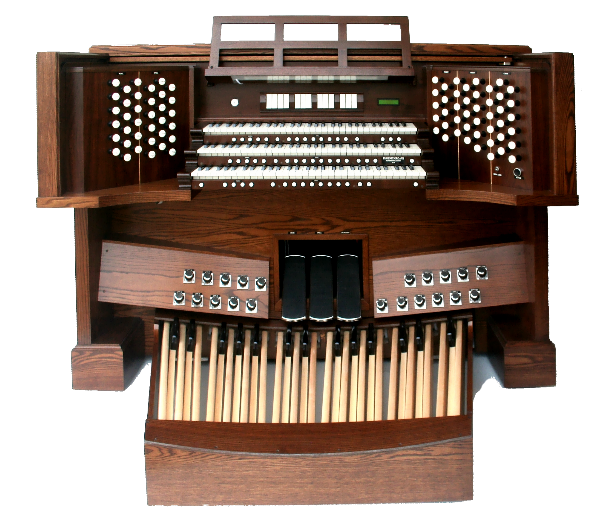
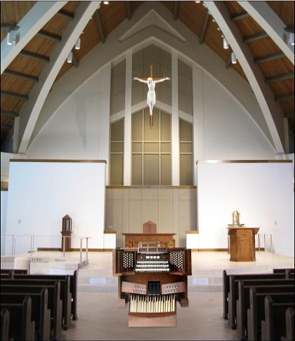

D.L. Simmons & Company Church Organs

GRANDE ORGUE
The Grande Orgue Consoles are just that.... GRAND. Every dimension of this console is thicker and scaled to what a pipe organ console should be. The solid hardwoods are the finest quality and fit and finished to fine handcrafted furniture quality. Along with the 1200-pounds of massive wood craftsmanship are the very best drawknobs, coupler tabs, thumb pistons, toe pistons and pedals which are all from industry leading pipe organ suppliers. This organ is build to make the same bold statement that Phoenix Organ sound makes! Available as an option to any organ specification.
The Grande Orgue Consoles are just that.... GRAND. Every dimension of this console is thicker and scaled to what a pipe organ console should be. The solid hardwoods are the finest quality and fit and finished to fine handcrafted furniture quality. Along with the 1200-pounds of massive wood craftsmanship are the very best drawknobs, coupler tabs, thumb pistons, toe pistons and pedals which are all from industry leading pipe organ suppliers. This organ is build to make the same bold statement that Phoenix Organ sound makes! Available as an option to any organ specification.



WEBSITE CONTENTS COPYRIGHT© 2015
DL SIMMONS & COMPANY CHURCH ORGANS
DL SIMMONS & COMPANY CHURCH ORGANS